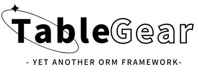
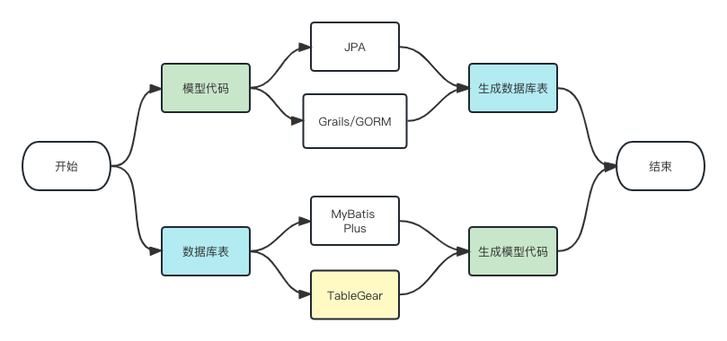
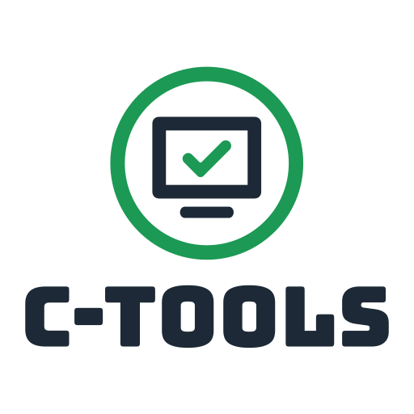

2023-01-13
TableGear 是一款基于 JDBC 标准的高性能ORM引擎。TableGear 底层基于 JDBC 进行生成代码，通过链式条件拼接调用完成数据库访问的模式。底层基于 JDBC 标准实现，主要特点是方便快速增量开发。
mvn tablegen:genTableGear vs JPG vs Gorm：

使用以下命令安装 TableGear CLI：
$ mvn com.github.yujiaao:tablegen-maven-plugin:1.13.2:gen
propPath用来配置配置文件所在位置 如需访问多个数据库，可以配多个配置文件，文件名间用逗号分隔
<plugin>
<groupId>com.github.yujiaao</groupId>
<artifactId>tablegen-maven-plugin</artifactId>
<version>1.13.2.4</version>
<configuration>
<propPath>${project.basedir}/tablegen1.properties,${project.basedir}/tablegen2.properties</propPath>
</configuration>
</plugin>
c-jmesa 将引入全部功能，可以按需替换为
<dependency>
<groupId>com.github.yujiaao</groupId>
<artifactId>c-jmesa</artifactId>
<version>1.13.2.4</version>
</dependency>
alias=testdb
className=com.mysql.cj.jdbc.Driver
dburl=jdbc:mysql://127.0.0.1:3306/testdb
username=test
password=test123
schema=testdb
table_owner=testdb
catalog=testdb
alias 用于生成数据源（DataSource）的别名
MySQL: schema和table_owner 为库名, catalog可不设 SQL Server: catalog为库名，schema、table_owner一般为dbo
package_name=com.bixuebihui.test
src_dir=src/main/java
test_dir=src/test/java
resource_dir=src/main/resources
service_dir=src/main/java
controller_dir=src/main/java
indexes=yes
indexes=yes 会根据主外键关系生成相应的数据操作方法，因为这种查询走索引 ，效率会更高
#table_list=test(\\w+)
table_list=table1,table2
exclude_table_list=not_table3
table_list 和 exclude_table_list 支持Java正则表达式，同样需要用\来转义
多个表用逗号分隔
同时出现时， exclude_table_list优先级更高
视图是一个好的数据工具，但不是哪里都允许用，如果你的公司不允许，那就用虚拟视图
view_list=view1:select * form a left join b on a.id=b.aid;\
view2:select * form c left join d on c.id=d.cid;
子格式为视图名1:查询语名1;视图名2:查询语名2, 太长时，可以用\续行符来解决
# 是否使用扩展表，如果不懂，就是no啦
kuozhanbiao=no
#是否加注解，用于validator和swagger
use_annotation=yes
#是否覆盖全部已有文件，包括dal,pojo
over_write_all = yes
#是否生成全部，为no时启用表结构对比的增量方式，如果速度很重要，试试 generate_all=no
generate_all=yes
#是否覆盖生成BaseList
generate_baselist=no
#是否用表机制模拟sequence的方式，生成自增长主键
use_autoincrement=yes
#是否用读写分离的双数据源
read_write_separate=yes
打开下面的注释试试
#haschildren code name \u4E09\u4E2A\u5B57\u6BB5
#pojo_node_interface=com.bixuebihui.module.catalog.node.NodeInterface
#pojo_node_interface_list=table_name1,table_name2,view_name3
##version
#pojo_version_interface=com.bixuebihui.module.catalog.node.VersionInterface
##state
#pojo_state_interface=com.bixuebihui.module.catalog.node.StateInterface
##uuid
#pojo_uuid_interface=com.bixuebihui.module.catalog.node.UUIDInterface
##modifydate
#pojo_modifydate_interface=com.bixuebihui.module.catalog.node.ModifydateInterface
## bean name of ElasticSearch connection configuration
alias=my_content
## type one of: elasticsearch_mapping, elasticsearch_sample, json
type=elasticsearch_mapping
url=http://localhost:9200
username=elastic
password=changeme
src_dir=src/main/java
package_name=com.ownsame.client.es
#comma separated index:alias pairs, alias can be ommit if you not have one
index_list=index1:alias1,index2
# this id field will used for ElasticSearch inner `_id`
primary_key_fields=biz_id_for_index1,biz_id_for_index2
# not generate for ignore_fields
ignore_fields=keyword
# I will gess for field for collection type, but not always collect, if not, point out here
collection_fields=id_list_field
